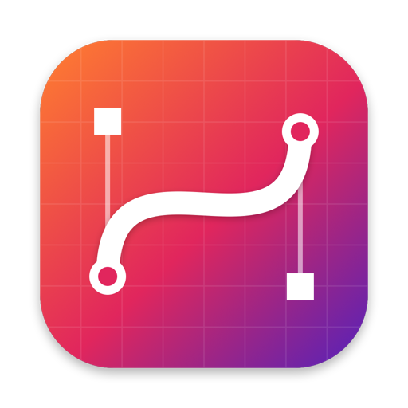
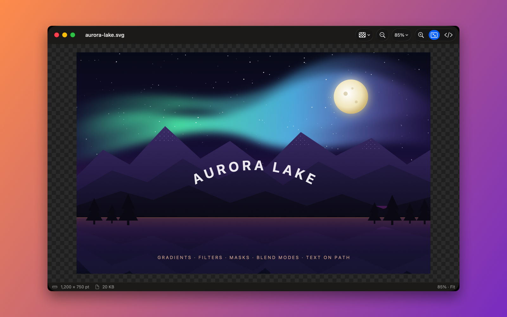
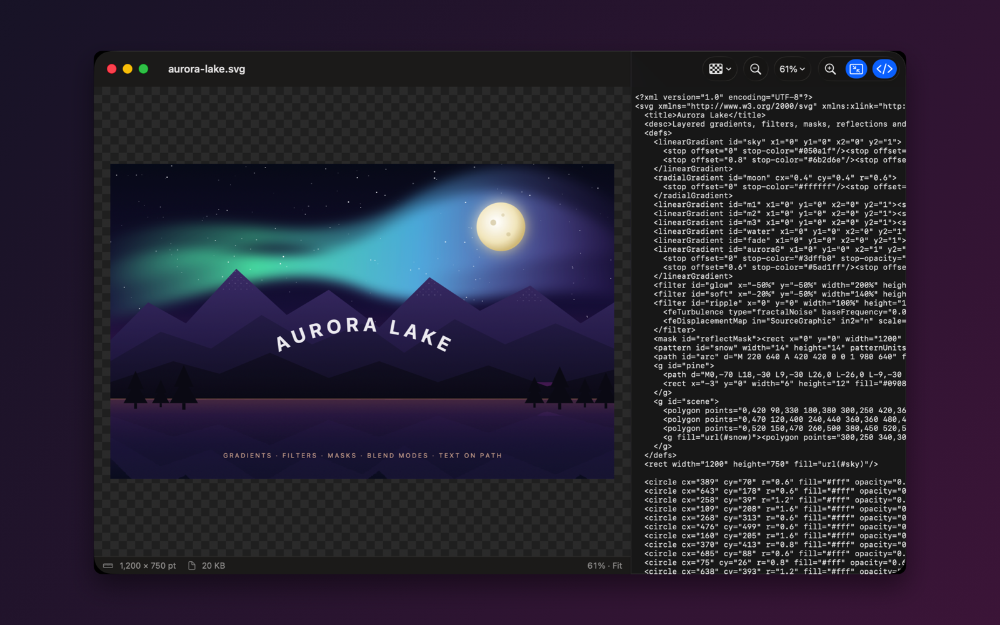
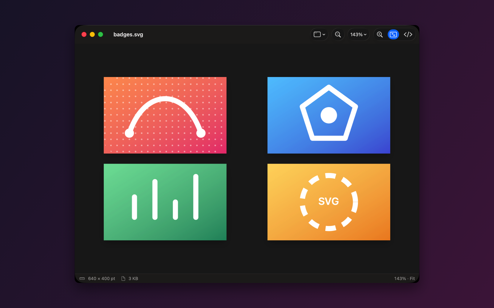

View SVG files the way they're meant to look — in a lightweight, native Mac app. Browser-accurate rendering with real macOS document windows, menus and gestures.
macOS 14 Sonoma or later · Apple silicon & Intel · Free and open source



Gradients, filters, CSS, masks, patterns, embedded fonts and images — powered by WebKit, so what you see is what the web sees.
Pinch, ⌘-scroll, double-tap to fit. Zoom to fit ⌘9, actual size ⌘0, presets from 25% to 800%.
Checkerboard, light, dark, window or any custom color — set a default in Settings, override per window from the toolbar.
Keep it open beside your editor. The moment the file changes on disk, the view updates.
Peek at the markup in a side panel with search ⌥⌘U — handy for those 200 KB Illustrator exports.
Export as PNG at 1×–4× ⇧⌘E, copy the image ⇧⌘C or the source ⌥⌘C straight to the clipboard.
Open Recent, multiple windows, drag files onto the window or Dock, Finder integration, .svg and gzip-compressed .svgz.
Sandboxed. SVG scripts never run, files can't phone home, and a strict content-security policy keeps hostile files contained.
Launches instantly, opens a 1 MB map or 50,000-path drawing without breaking a sweat, and stays out of your way.
Swift, SwiftUI and AppKit. No Electron, no frameworks to download, no accounts, no telemetry. The whole thing is a small Swift package you can build yourself in under a minute.
Free on the Mac App Store, or build it from source.
git clone https://github.com/patbonecrusher/svg-viewer cd svg-viewer && ./build.sh --open